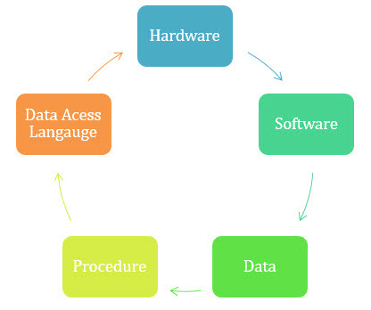

The Full course about all languajes available in this website
This section incorporates all the previews sections info into one single page to learn it all at once
HTML summary
What is HTML?
HTML stands for Hyper Text Markup Language
HTML is the standard markup language for creating Web pages
HTML describes the structure of a Web page
HTML consists of a series of elements
HTML elements tell the browser how to display the content
HTML elements label pieces of content such as "this is a heading", "this is a paragraph", "this is a link", etc.
Tags used for most documents
The '!DOCTYPE html' declaration defines that this document is an HTML5 document
The 'html' element is the root element of an HTML page
The 'head' element contains meta information about the HTML page
The 'title' element specifies a title for the HTML page (which is shown in the browser's title bar or in the page's tab)
The 'body' element defines the document's body, and is a container for all the visible contents, such as headings, paragraphs, images, hyperlinks, tables, lists, etc.
The 'h1' element defines a large heading
The 'p' element defines a paragraph
Web browsers
The purpose of a web browser (Chrome, Edge, Firefox, Safari) is to read HTML documents and display them correctly.
A browser does not display the HTML tags, but uses them to determine how to display the document:

HTML Page Structure
Below is a visualization of an HTML page structure:
'html'
'head'
'title'Page title'/title'
'/head'
'body'
'h1'This is a heading'/h1'
'p'This is a paragraph.'/p'
'p'This is another paragraph.'/p'
'/body'
'/html'
Note: The content inside the 'body' section (the white area above) will be displayed in a browser. The content inside the 'title' element will be shown in the browser's title bar or in the page's tab.
CCS Course
What is CSS?
Cascading Style Sheets (CSS) is used to format the layout of a webpage.
With CSS, you can control the color, font, the size of text, the spacing between elements, how elements are positioned and laid out, what background images or background colors are to be used, different displays for different devices and screen sizes, and much more!
Tip: The word cascading means that a style applied to a parent element will also apply to all children elements within the parent. So, if you set the color of the body text to "blue", all headings, paragraphs, and other text elements within the body will also get the same color (unless you specify something else)!
Using CSS
CSS can be added to HTML documents in 3 ways:
Inline - by using the style attribute inside HTML elements
Internal - by using a 'style' element in the 'head' section
External - by using a 'link' element to link to an external CSS file
The most common way to add CSS, is to keep the styles in external CSS files. However, in this tutorial we will use inline and internal styles, because this is easier to demonstrate, and easier for you to try it yourself.
Most used CSS tags
Use the HTML style attribute for inline styling
Use the HTML 'style' element to define internal CSS
Use the HTML 'link' element to refer to an external CSS file
Use the HTML 'head' element to store 'style' and 'link' elements
Use the CSS color property for text colors
Use the CSS font-family property for text fonts
Use the CSS font-size property for text sizes
Use the CSS border property for borders
Use the CSS padding property for space inside the border
Use the CSS margin property for space outside the border
JavaScript Course
The HTML 'script' Tag
JavaScript makes HTML pages more dynamic and interactive.
The HTML 'script' tag is used to define a client-side script (JavaScript).
The 'script' element either contains script statements, or it points to an external script file through the src attribute.
Common uses for JavaScript are image manipulation, form validation, and dynamic changes of content.
To select an HTML element, JavaScript most often uses the document.getElementById() method.
The HTML 'noscript' Tag
The HTML 'noscript' tag defines an alternate content to be displayed to users that have disabled scripts in their browser or have a browser that doesn't support scripts.
MySQL Course
MySQL® is the open source community's most popular Relational Database Management System (RDBMS) offering, and is a key part of LAMP – Linux™, Apache™, MySQL®, PHP/Perl/Python®. Many Fortune 500 companies adopt MySQL to reap the benefits of an open source, platform-independent RDMS, such as simplifying conversion from other platforms and lowering database Total Cost of Ownership by 90%. This class encourages the student to explore database fundamentals, as well as MySQL features. Students learn the basics of MySQL use and the programming of stored routines and triggers. Students also participate in database design discussions, perform administrative functions, learn about optimization and performance tuning, and explore various APIs.
What is MySQL?
MySQL is an open-source database management system used to organize data into one or more tables, having data types related to each other. These data types are used to extract, modify, or structure the data. It also allows implementing a database in computer systems, managing users, database integrity testing, and backup creation.
What is a Database?
A database is a systematic collection of data. They support electronic storage and manipulation of data. Databases make data management easy.
Let us discuss a database example: An online telephone directory uses a database to store data of people, phone numbers, and other contact details. Your electricity service provider uses a database to manage billing, client-related issues, handle fault data, etc.
Let us also consider Facebook. It needs to store, manipulate, and present data related to members, their friends, member activities, messages, advertisements, and a lot more. We can provide a countless number of examples for the usage of databases.
Types of Databases
Distributed databases:
A distributed database is a type of database that has contributions from the common database and information captured by local computers. In this type of database system, the data is not in one place and is distributed at various organizations.
Relational databases:
This type of database defines database relationships in the form of tables. It is also called Relational DBMS, which is the most popular DBMS type in the market. Database example of the RDBMS system include MySQL, Oracle, and Microsoft SQL Server database.
Object-oriented databases:
This type of computers database supports the storage of all data types. The data is stored in the form of objects. The objects to be held in the database have attributes and methods that define what to do with the data. PostgreSQL is an example of an object-oriented relational DBMS.
Centralized database:
It is a centralized location, and users from different backgrounds can access this data. This type of computers databases store application procedures that help users access the data even from a remote location.
Open-source databases:
This kind of database stored information related to operations. It is mainly used in the field of marketing, employee relations, customer service, of databases.
Cloud databases:
A cloud database is a database which is optimized or built for such a virtualized environment. There are so many advantages of a cloud database, some of which can pay for storage capacity and bandwidth. It also offers scalability on-demand, along with high availability.
Data warehouses:
Data Warehouse is to facilitate a single version of truth for a company for decision making and forecasting. A Data warehouse is an information system that contains historical and commutative data from single or multiple sources. Data Warehouse concept simplifies the reporting and analysis process of the organization.
NoSQL databases:
NoSQL database is used for large sets of distributed data. There are a few big data performance problems that are effectively handled by relational databases. This type of computers database is very efficient in analyzing large-size unstructured data.
Graph databases:
A graph-oriented database uses graph theory to store, map, and query relationships. These kinds of computers databases are mostly used for analyzing interconnections. For example, an organization can use a graph database to mine data about customers from social media.
OLTP databases:
OLTP another database type which able to perform fast query processing and maintaining data integrity in multi-access environments.
Personal database:
A personal database is used to store data stored on personal computers that are smaller and easily manageable. The data is mostly used by the same department of the company and is accessed by a small group of people.
Multimodal database:
The multimodal database is a type of data processing platform that supports multiple data models that define how the certain knowledge and information in a database should be organized and arranged.
Document/JSON database:
In a document-oriented database, the data is kept in document collections, usually using the XML, JSON, BSON formats. One record can store as much data as you want, in any data type (or types) you prefer.
Hierarchical:
This type of DBMS employs the "parent-child" relationship of storing data. Its structure is like a tree with nodes representing records and branches representing fields. The windows registry used in Windows XP is a hierarchical database example.
Network DBMS:
This type of DBMS supports many-to-many relations. It usually results in complex database structures. RDM Server is an example of database management system that implements the network model.
